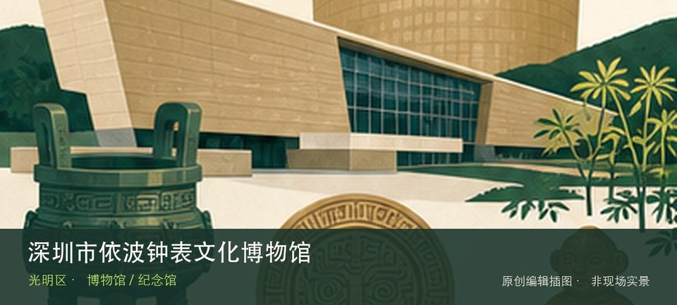

适合谁
适合对该专题有明确兴趣的人，也适合作为高温和雨天行程；开放不明时不宜临时前往。

SHENZHEN GUIDE · 269
金安路 · 博物馆 / 纪念馆
深圳市依波钟表文化博物馆位于金安路产业园，钟表机械、计时原理和品牌制造构成从技术到工业设计的专题，企业园区参观须提前预约。这里不是只有一个打卡点：机械钟表结构提供主要线索，计时技术演变补足另一层现场关系。理解这处场馆，重点不是把所有展柜看完，而是沿着机械钟表结构和计时技术演变两条线索辨认其专题边界。常设展、开放楼层和时段可能调整，专程前往前仍应核对场馆当天公告。
WHY GO
适合对该专题有明确兴趣的人，也适合作为高温和雨天行程；开放不明时不宜临时前往。
先完成企业预约并确认工作日、门岗与车牌，入馆从机芯结构看起，再观察工业设计与生产环节。
公共交通先到金安路产业园片区，再以深圳市依波钟表文化博物馆公开参观入口为终点；校园、园区或预约型场馆须同时核对门禁与开放日。
自驾优先使用深圳市依波钟表文化博物馆所属建筑、园区或邻近正规公共停车场；预约时一并确认车牌登记、门岗和社会车辆准入规则。
全年可安排，尤其适合高温或降雨日；台风、极端天气及布展期仍可能临时调整开放。
NEARBY IDEAS
 编辑配图·非现场实景
编辑配图·非现场实景
合水口古村位于马田街道合水口社区，始建历史可追溯至明代的广府村落以梳式布局、祠堂和武术传统承载公明片区历史。
 编辑配图·非现场实景
编辑配图·非现场实景
公明老墟位于公明街道，传统墟市街巷、旧商铺和仍在经营的社区商业保留光明本地生活尺度，更新与日常经营同时发生。
 授权实景图
授权实景图
红花山公园位于公明街道振明路88号，公明老城区的山体公园以红花山塔、林荫台阶和老墟视野构成短线登高路线。从红花山塔转向公明老城远眺时，地点的空间、历史或使用方式才会变得清楚。